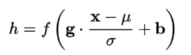

BN、LN
BN、LN
一、什么是Normalization？
Normalization：规范化或标准化，就是把输入数据X，在输送给神经元之前先对其进行平移和伸缩变换，将X的分布规范化成在固定区间范围的标准分布。

二、深度学习中为什么要用Normalization？
把数据拉回标准正态分布，因为神经网络的Block大部分都是矩阵运算，一个向量经过矩阵运算后值会越来越大，产生各种各样的分布，梯度会不稳定。**为了网络的稳定性，加快网络的收敛，防止过拟合，且便于比较，**我们需要及时把值拉回正态分布。
Normalization根据标准化操作的维度不同可以分为batch Normalization和Layer Normalization。BatchNorm就是通过对batch size这个维度归一化来让分布稳定下来。LayerNorm则是通过对Hidden size这个维度归一化来让某层的分布稳定。
三、Batch Normalization 和 Layer Normalization的定义
BN（纵向规范化）：

LN（横向规范化）：

四、Batch Normalization 和 Layer Normalization的区别
BatchNorm是对一个batch-size样本内的每个特征做归一化，**抹杀了同一样本内不同特征之间的大小关系，但是保留了不同样本间的大小关系；**LayerNorm是对每个样本的所有特征一起做归一化，抹杀了不同样本间的大小关系，但是保留了一个样本内不同特征之间的大小关系。
（理解：BN对batch不同数据的同一特征进行标准化，变换之后，纵向来看，不同样本的同一特征仍然保留了之前的大小关系，但是横向对比样本内部的各个特征之间的大小关系不一定和变换之前一样了，因此抹杀或破坏了不同特征之间的大小关系，保留了不同样本之间的大小关系；LN对单一样本的所有特征进行标准化，样本内的特征处理后原来数值大的还是相对较大，原来数值小的还是相对较小，不同特征之间的大小关系还是保留了下来，但是不同样本在各自标准化处理之后，两个样本对应位置的特征之间的大小关系将不再确定，可能和处理之前就不一样了，所以破坏了不同样本间的大小关系**）**
五、Batch Normalization 和 Layer Normalization的使用场景
在BN和LN都能使用的场景中，BN的效果一般优于LN，原因是基于不同数据，同一特征得到的归一化特征更不容易损失信息。但是有些场景是不能使用BN的，例如batch size较小或者序列问题中使用LN。
RNN 或Transformer为什么用Layer Normalization？
首先RNN或Transformer解决的是序列问题，一个存在的问题是不同样本的序列长度不一致，而Batch Normalization需要对不同样本的同一位置特征进行标准化处理，所以无法应用；当然，输入的序列都要做padding补齐操作，但是补齐的位置填充的都是0，这些位置都是无意义的，此时的标准化也就没有意义了。
其次上面说到，BN抹杀了不同特征之间的大小关系；LN是保留了一个样本内不同特征之间的大小关系，这对NLP任务是至关重要的。对于NLP或者序列任务来说，一条样本的不同特征，其实就是时序上的变化，这正是需要学习的东西，自然不能做归一化抹杀，所以要用LN。